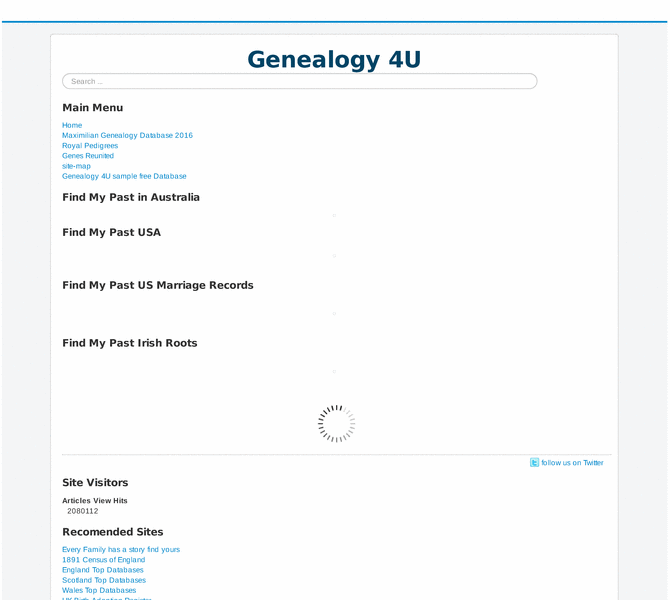

Previewing: GENEALOGY 4U Previewing: GENEALOGY 4U 
Use the left/right red arrow controls to navigate through this ring - Click the preview image to visit the member site.

Our aim is to provide as many real content links for you. With over 20 years of experience of trawling the NET for good quality genealogy and related links, we now wish to save you time and effort by providing you this FREE service.
GENEALOGY 4U owned by:
 peterwesternuk peterwesternuk
A member of the original webring since 09/09/2012.
|
|